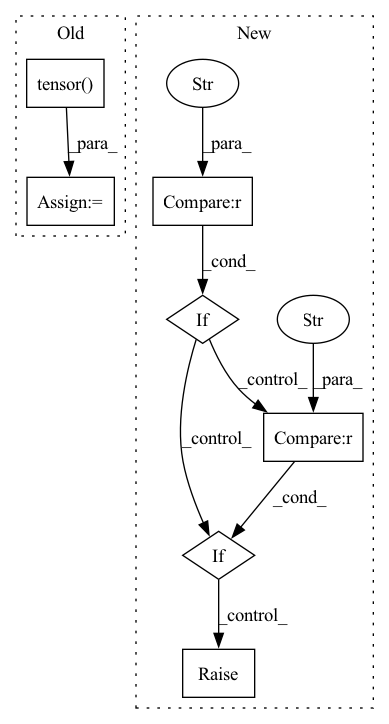

Pattern ID :6302
Before Change
assert pq.shape == z.shape
assert conf["dipole_moment"].attrs["units"] == "e*Å"
dp = pt.tensor( conf["dipole_moment"], dtype=pt.float32)
assert dp.shape == (3,)
// Skip samples with large forces
if self.max_gradient:After Change
mols = None
load_confs = None
if version == "1.0" :
assert "name" in h5.attrs
mols = h5.items()
load_confs = self._load_confs_1_0
elif version == "2.0" :
assert len(h5.keys()) == 1
mols = list(h5.values())[0].items()
load_confs = self._load_confs_2_0
else:
raise RuntimeError(f"Unsuported layout verions: {version}")
// Iterate over the molecules
for i_mol, (mol_id, mol) in tqdm(In pattern: SUPERPATTERN
Frequency: 3
Non-data size: 7
Instances Fragment ID: 21839309
Project Name: torchmd/torchmd-net
Commit Name: d23e6500f2cef1fa56d6c99ce5fdb983f1379bca
Time: 2022-10-28
Author: peastman@stanford.edu
File Name: torchmdnet/datasets/ace.py
M Class Name: Ace
N Class Name: Ace
M Method Name: sample_iter(2)
N Method Name: sample_iter(1)
M Parent Class: Dataset
N Parent Class: Dataset
M File Name: torchmdnet/datasets/ace.py
N File Name: torchmdnet/datasets/ace.py
M Start Line: 72
M End Line: 123
N Start Line: 144
N End Line: 206
Before Change
@staticmethod
def get_sigma(X):
npoints = torch.tensor( float(len(X)))
nsqrt = npoints**(1./X.shape[1]) - 1.
delta = (X.max(0).values - X.min(0).values) / nsqrt
return delta.expand(X.size())
After Change
if isinstance(self.sigma_method,float):
return self.get_sigma_ones(self.centers, s=self.sigma_method)
elif self.sigma_method == "1d" :
return self.get_sigma_1d(self.centers)
elif self.sigma_method == "mean" :
return self.get_sigma_average(self.centers)
else:
raise ValueError(self.sigma_method, " not a correct option for sigma")
@staticmethod
def get_sigma_average(X): Fragment ID: 21839308
Project Name: nlesc-jcer/qmctorch
Commit Name: 157db4eaa87f1f692ae29b423ac3cb8bcb8873f9
Time: 2019-06-17
Author: nicolas.gm.renaud@gmail.com
File Name: pyCHAMP/wavefunction/rbf.py
M Class Name: RBF
N Class Name: RBF
M Method Name: get_sigma(1)
N Method Name: get_sigma(1)
M Parent Class: nn.Module
N Parent Class: nn.Module
M File Name: pyCHAMP/wavefunction/rbf.py
N File Name: pyCHAMP/wavefunction/rbf.py
M Start Line: 93
M End Line: 96
N Start Line: 101
N End Line: 110
Before Change
continue
assert conf["positions"].attrs["units"] == "Å"
pos = pt.tensor( conf["positions"][...], dtype=pt.float32)
assert pos.shape == (z.shape[0], 3)
assert conf["formation_energy"].attrs["units"] == "eV"
y = pt.tensor(conf["formation_energy"][()], dtype=pt.float64)After Change
version = h5.attrs["layout_version"]
mols = None
if version == "1.0" :
assert "name" in h5.attrs
mols = h5.items()
elif version == "2.0" :
assert len(h5.keys()) == 0
mols = list(h5.values())[0].items()
else:
raise RuntimeError(f"Unsuported layout verions: {version}")
// Iterate over the molecules
for i_mol, (mol_id, mol) in tqdm( Fragment ID: 21839320
Project Name: torchmd/torchmd-net
Commit Name: fdbbd9d91ea0ec8e8a0ea2ec63be8b8bd2e4cb61
Time: 2022-10-17
Author: r.galvelis@acellera.com
File Name: torchmdnet/datasets/ace.py
M Class Name: Ace
N Class Name: Ace
M Method Name: sample_iter(2)
N Method Name: sample_iter(2)
M Parent Class: Dataset
N Parent Class: Dataset
M File Name: torchmdnet/datasets/ace.py
N File Name: torchmdnet/datasets/ace.py
M Start Line: 81
M End Line: 125
N Start Line: 110
N End Line: 140